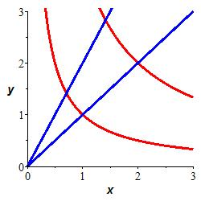
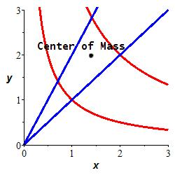
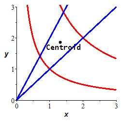

d. Integrating in 2D Curvilinear Coordinates
6. Applications
We previously did
Applications of Multiple Integrals in Rectangular Coordinates
and we have done
Applications of Double Integrals in Polar Coordinates.
All of those applications can also be done using general two-dimensional
curvilinear coordinates.
All the examples on this page of applications of double integrals in
curvilinear coordinates will use the diamond shape region in the first
quadrant bounded by \(y=\dfrac{1}{x}\) and \(y=\dfrac{4}{x}\) in
red and \(y=x\) and \(y=2x\) in
blue. Find a curvilinear
coordinate system for which the \(4\)
boundary curves are specified by constant values of the \(2\) coordinates.
Then find the Jacobian factor.

We look at the boundary curves to determine a useful coordinate system
(\(u\) and \(v\)) for this problem. The first two curves, \(y=\dfrac{1}{x}\)
and \(y=\dfrac{4}{x}\), can be written as:
\[
xy=1 \quad \text{and} \quad xy=4
\]
If we let \(u=xy\), then the bounds for \(u\) become
\[
u=1 \quad \text{and} \quad u=4
\]
Similarly, the other two curves, \(y=x\) and \(y=2x\), can be written as:
\[
\dfrac{y}{x}=1 \quad \text{and} \quad \dfrac{y}{x}=2
\]
If we let \(v=\dfrac{y}{x}\), then the bounds for \(v\) become
\[
v=1 \quad \text{and} \quad v=2
\]
Summarizing,
\[
u=xy \quad \text{and} \quad v=\dfrac{y}{x}
\]
Next we need to find the Jacobian
\(J=\left|\dfrac{\partial(x,y)}{\partial(u,v)}\right|\).
To do this, we need to find \(x\) and \(y\) as functions of \(u\) and \(v\).
We do this by multiplying and dividing the equations. If we multiply, we
get \(uv=xy\dfrac{y}{x}=y^2\) or \(y=\sqrt{uv}\). If we divide, we get
\(\dfrac{u}{v}=xy\dfrac{x}{y}=x^2\) or \(x=\sqrt{\dfrac{u}{v}}\). It's
beneficial to write these formulas with fractional powers since we are
going to differentiate.
\[
x=\sqrt{\dfrac{u}{v}}=u^{1/2}v^{-1/2}
\qquad \text{and} \qquad
y=\sqrt{uv}=u^{1/2}v^{1/2}
\]
Now we can compute the Jacobian:
\[\begin{aligned}
J&=\left|\begin{vmatrix}
\dfrac{\partial x}{\partial u} & \dfrac{\partial y}{\partial u} \\[8pt]
\dfrac{\partial x}{\partial v} & \dfrac{\partial y}{\partial v}
\end{vmatrix}\right|
=\left|\begin{vmatrix}
\dfrac{1}{2}u^{-1/2}v^{-1/2} & \dfrac{1}{2}u^{-1/2}v^{1/2} \\[8pt]
\dfrac{-1}{2}u^{1/2}v^{-3/2} & \dfrac{1}{2}u^{1/2}v^{-1/2}
\end{vmatrix}\right| \\
&=\left|\dfrac{1}{4}v^{-1}-\,\dfrac{-1}{4}v^{-1}\right|
=\left|\dfrac{1}{2v}\right|=\dfrac{1}{2v}
\end{aligned}\]
We dropped the absolute value because \(v\) is posiitve.
Volume
Recall that a good choice for \(u\) and \(v\) are:
\[
u=xy \quad \text{and} \quad v=\dfrac{y}{x}
\]
So that the bounds on \(u\) and \(v\) become:
\[
1 \le u \le 4 \quad \text{and} \quad 1 \le v \le 2
\]
And the Jacobian is:
\[
J=\dfrac{1}{2v}
\]
The last thing we need is the integrand:
\[
y^2=(\sqrt{uv})^2=uv
\]
We can now compute the volume:
\[\begin{aligned}
V&=\iint_R y^2\,dA=\iint_R y^2 \,J\,du\,dv \\
&=\int_1^2\int_1^4 uv\dfrac{1}{2v}\,du\,dv
=\dfrac{1}{2}\int_1^2\int_1^4 u\,du\,dv \\
&=\dfrac{1}{2}\left[\dfrac{u^2}{2}\right]_1^4\left[v\dfrac{}{}\right]_1^2
=\dfrac{1}{2}\left(\dfrac{16-1}{2}\right)(2-1)
=\dfrac{15}{4}
\end{aligned}\]
Area
The area is:
\[\begin{aligned}
A&=\iint\limits_R 1\,dA=\int_1^2\int_1^4 \dfrac{1}{2v}\,du\,dv \\
&=\dfrac{1}{2}\int_1^4 1\,du\int_1^2 \dfrac{1}{v}\,dv
=\dfrac{1}{2}\left[u\dfrac{}{}\right]_1^4\left[\ln|v|\dfrac{}{}\right]_1^2 \\
&=\dfrac{1}{2}(4-1)\ln2=\dfrac{3}{2}\ln2
\approx1.04
\end{aligned}\]
Mass
Since \(x=\sqrt{\dfrac{u}{v}}\) and \(y=\sqrt{uv}\) the density is:
\[
\delta=\dfrac{xy}{2}=\dfrac{1}{2}\sqrt{\dfrac{u}{v}}\sqrt{uv}=\dfrac{u}{2}
\]
So the mass of the region is given by
\[\begin{aligned}
M&=\iint\limits_R \delta\,dA
=\int_1^2\int_1^4 \dfrac{u}{2}\left(\dfrac{1}{2v}\right)\,du\,dv \\
&=\dfrac{1}{4}\int_1^4 u\,du\int_1^2 \dfrac{1}{v}\,dv
=\dfrac{1}{4}\left[\dfrac{u^2}{2}\right]_1^4\left[\ln|v|\right]_1^2 \\
&=\dfrac{15}{8}\ln2
\approx1.30
\end{aligned}\]
Center of Mass
Since \(x=\sqrt{\dfrac{u}{v}}\), \(y=\sqrt{uv}\) and the mass density is
\(\delta=\dfrac{u}{2}\), then the moments of mass are
\[\begin{aligned}
M_x&=\iint\limits_R x\,\delta\,J\,du\,dv
=\int_1^2\int_1^4 \sqrt{\dfrac{u}{v}}\dfrac{u}{2}\dfrac{1}{2v}\,du\,dv \\
&=\dfrac{1}{4}\int_1^4 u^{3/2}\,du\int_1^2 v^{-3/2}\,dv
=\dfrac{1}{4}\left[\dfrac{2u^{5/2}}{5}\right]_1^4\left[-2v^{-1/2}\right]_1^2 \\
&=\dfrac{1}{4}\cdot\dfrac{2}{5}\left(32-1\right)\left(\dfrac{-2}{\sqrt{2}}+2\right)
=\dfrac{31}{10}\left(2-\sqrt{2}\right)
\approx1.82
\end{aligned}\]
and
\[\begin{aligned}
M_y&=\iint\limits_R y\,\delta\,J\,du\,dv
=\int_1^2\int_1^4 \sqrt{uv}\dfrac{u}{2}\dfrac{1}{2v}\,du\,dv \\
&=\dfrac{1}{4}\int_1^4 u^{3/2}\,du\int_1^2 v^{-1/2}\,dv
=\dfrac{1}{4}\left[\dfrac{2u^{5/2}}{5}\right]_1^4\left[2v^{1/2}\right]_1^2 \\
&=\dfrac{1}{4}\cdot\dfrac{2}{5}\left(32-1\right)\left(2\sqrt{2}-2\right)
=\dfrac{31}{5}(\sqrt{2}-1)
\approx2.57
\end{aligned}\]
Thus the center of mass for this region and given density is
\[\begin{aligned}
\bar{x}&=\dfrac{M_x}{M}\approx\dfrac{1.82}{1.30}=1.40 \\
\bar{y}&=\dfrac{M_y}{M}\approx\dfrac{2.57}{1.30}=1.98
\end{aligned}\]
The center of mass is plotted in the region as a black dot.

Centroid
We again calculate the moments in \(x\) and \(y\) directions, but this time
the density function is \(\delta=1\). So we are calculating the moments of
area:
\[\begin{aligned}
A_x&=\iint\limits_R x\,J\,du\,dv
=\int_1^2\int_1^4 \sqrt{\dfrac{u}{v}}\dfrac{1}{2v}\,du\,dv \\
&=\dfrac{1}{2}\int_1^4 u^{1/2}\,du\int_1^2 v^{-3/2}\,dv
=\dfrac{1}{2}\left[\dfrac{2u^{3/2}}{3}\right]_1^4\left[-2v^{-1/2}\right]_1^2 \\
&=\dfrac{1}{2}\cdot\dfrac{2}{3}\left(8-1\right)\left(\dfrac{-2}{\sqrt{2}}+2\right)
=\dfrac{7}{3}\left(2-\sqrt{2}\right)
\approx1.37
\end{aligned}\]
and
\[\begin{aligned}
A_y&=\iint\limits_R y\,J\,du\,dv
=\int_1^2\int_1^4 \sqrt{uv}\dfrac{1}{2v}\,du\,dv \\
&=\dfrac{1}{2}\int_1^4 u^{1/2}\,du\int_1^2 v^{-1/2}\,dv
=\dfrac{1}{2}\left[\dfrac{2u^{3/2}}{3}\right]_1^4\left[2v^{1/2}\right]_1^2 \\
&=\dfrac{1}{2}\cdot\dfrac{2}{3}\left(8-1\right)\left(2\sqrt{2}-2\right)
=\dfrac{14}{3}(\sqrt{2}-1)
\approx1.93
\end{aligned}\]
Thus the centroid for this region is
\[\begin{aligned}
\bar{x}&=\dfrac{A_x}{A}\approx\dfrac{1.37}{1.04}=1.31 \\
\bar{y}&=\dfrac{A_y}{A}\approx\dfrac{1.93}{1.04}=1.86
\end{aligned}\]
The centroid is plotted in the region as a black dot.

Since the density \(\delta=\dfrac{xy}{2}\) increases with \(x\) and \(y\),
we expect the center of mass to be to the right and up from the centroid
which it is.
Average Value
The average density is simply the total mass divided
by the area of the region, both of which we have already calculated:
\[
\delta_\text{ave}=\dfrac{M}{A}
=\dfrac{15\ln2}{8}\dfrac{2}{3\ln2}
=\dfrac{5}{4}
\]
PY: Add an exercise on the diamond shape on the previous page
for area and mass with \(\delta=x\) and average of \(f=x^3\).